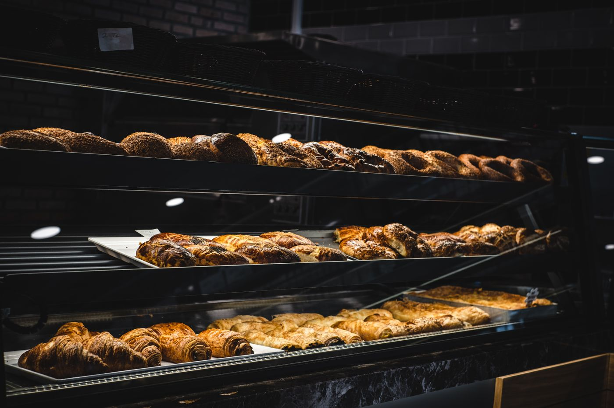

Торты на заказ
В справочниках у пекарни отмечены торты на заказ; условия — уточняются.
уточняетсяассортимент и цены
Выберите точку, что приготовить и когда забрать — заказ придёт в пекарню в Telegram, вам перезвонят и подтвердят.

Это концепт. С вашими фото и правками будет ещё лучше
Четыре шага — и заказ у пекарни в Telegram. Это рабочий макет: попробуйте.
Часы по справочнику: ежедневно 8:00–21:00 (уточняется).
Ассортимент и цены уточняются — пекарня перезвонит и всё согласует.
Желаемая дата — пекарня подтвердит, успевает ли к этому сроку.
Так это будет работать: пекарня получает заказ с точкой, датой и пожеланиями и перезванивает, чтобы подтвердить его и стоимость. Сейчас это макет — ничего не отправлено и не сохранено.
Сеть «home» в Барнауле.
Ежедневно 8:00–21:00 · по справочнику, уточняется
Ежедневно 8:00–21:00 · по справочнику, уточняется
Ежедневно 8:00–21:00 · по справочнику, уточняется
Ежедневно 8:00–21:00 · по справочнику, уточняется
Ежедневно 8:00–21:00 · по справочнику, уточняется
Ежедневно 8:00–21:00 · по справочнику, уточняется
Адреса — из справочника spravka.city (раздел «Филиалы») и Яндекс Карт; список точек и часы уточняются.
Только то, что известно из открытых карточек пекарни.
По справочникам и Яндекс Картам: ежедневно с 8:00 до 21:00. Уточняется.
В справочниках у пекарни отмечены торты на заказ; сроки и условия — уточняются.
Меню и цены в открытом доступе не опубликованы — уточняется.